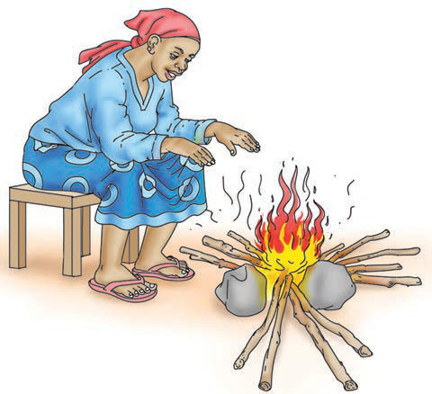

Maelezo ya picha: Mvulana anapika chakula kwenye sufuria juu ya jiko la moto.
Kielelezo namba 2: shughuli za mapishi.
(b)
Kwa shughuli mbalimbali za viwandani ikiwemo uyeyushaji wa chuma na kutengeneza bidhaa kama vile nondo na plastiki.Moto pia hutumika katika usafishaji wa dhahabu;
(c)
Husaidia katika kukausha na uhifadhi wa vyakula au mazao; na
(d)
Hutusaidia kupata joto katika mazingira yenye baridi.Mfano, kuota moto wakati wa baridi.Kielelezo namba 3 kinaonesha mtu akiota moto.

Maelezo ya picha: Mwanamke amekaa karibu na moto akiota mikono ili kupata joto.Kielelezo namba 3: mtu akiota moto.